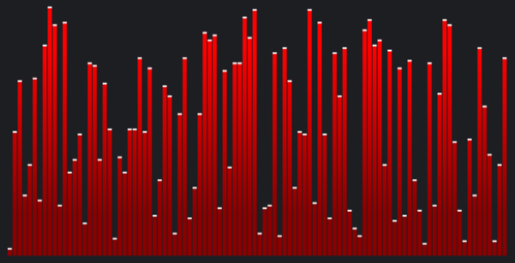
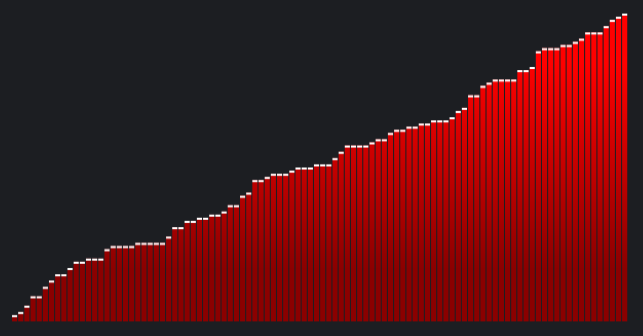
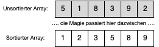
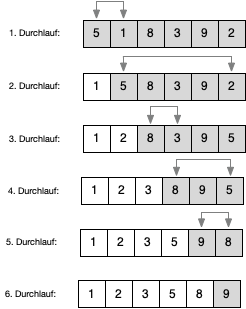
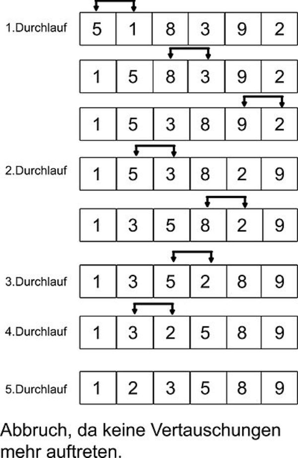

{% extends "../_base_template.html" %}
{% block title %}Lektion 10 - Sortieren{% endblock %}

{% block sections %}
<section data-markdown>
<textarea data-template>
<i class="fas fa-graduation-cap"></i> Lektion 10 - Sortieren
=============================

**Ziele:**

Sortieralgorithmen (die nächsten 3x)
* Sie kennen das Einsatzgebiet und die Eigenschaften von Sortieralgorithmen
* Sie können die gängigsten Sortieralgorithmen nennen und ihr Einsatzgebiet beschreiben
* Sie können anhand von Beispielen Sortieralgorithmen nachvollziehen
* Sie können die Algorithmen "Selection Sort" und "Bubble Sort" in Java programmieren

</textarea>
</section>

<section data-markdown >
<textarea data-template>
<i class="fas fa-graduation-cap"></i> Lektion 10 - Iteration, Rekursion
=============================

Besprechung Aufgaben vom letzten Mal

im Speziellen: MazeSolver: [rekursion.html](./rekursion.html)
</textarea>
</section>


<section data-markdown>
<textarea data-template>
<i class="fas fa-graduation-cap"></i> Sortieren
=============================

**Sortieren ist wichtig**!

Sie werden sehr häufig Daten sortieren müssen. Es gibt unzählige Beispiele für die Anwendung:

* Kartenspiele
* Adresslisten
* Listen darstellen in Applikationen
* Statistik (z.B. Percentil-Angaben)
* usw.

Es ist also unbestritten, dass Sie algorithmisch sortieren können müssen!

<div style="display:flex;align-items:center">

<i class="far fa-hand-point-right" style="margin-right:5px" ></i>

</div>

</textarea>
</section>

<!-- not this year - corona ban, working over video
<section data-markdown>
<textarea data-template>
<i class="fas fa-flask"></i> Sortieren - Sie sind an der Reihe!
=============================

Wir bilden 2 Gruppen. Jede Gruppe entwirft einen Sortier-Algorithmus, und demonstriert diesen mit den LEGO&trade;-Steinen.

Beantworten Sie dazu folgende Fragen:

* Welche **Datenstruktur** verwenden Sie? Warum?
* Wie **funktioniert** ihr Sortieralgorithmus? Demonstrieren Sie!
* Ist das Sortieren immer gleich **effizient**? Was beeinflusst die Effizienz in Ihrem Algorithmus?
</textarea>
</section>
-->

<section data-markdown>
<textarea data-template>
<i class="fas fa-graduation-cap"></i> Sortieren - Etwas Theorie
=============================

**Eigenschaften von Sortieralgorithmen**

Ein Sortieralgorithmus ist:

* **stabil**, wenn er die relative Reihenfolge der Schlüssel im Datensatz beibehält. Beispiel: Eine alphabetisch sortierte Liste von Personen
  soll nach Alter sortiert werden: Nach dem Sortieren sind Personen mit gleichem Alter weiterhin alphabetisch sortiert.
* **instabil**, wenn eben das Gegenteil von oben erfolgt: Elemente mit gleichem Schlüssel sind nach dem Sortieren unter Umständen anders rum angeordnet.
* **intern**, wenn der Algorithmus im Speicher mittels Arrays / Listen bearbeitet wird
* **extern**, wenn der Algorithmus Daten auf externen Medien (z.B. Festplatte, Datenbank) bearbeitet / sortiert
</textarea>
</section>

<section data-markdown>
<textarea data-template>
<i class="fas fa-graduation-cap"></i> Sortieren - Etwas Theorie
=============================

**Variationen - verschiedene Algorithmen**

1. BubbleSort - einfachster Algorithmus, naiver Ansatz
2. Selection Sort
3. Merge Sort
4. Insertion Sort
5. QuickSort

**Einteilung nach Programmierparadigma**

Entwurfsmuster | Implementierung mittels Array | Implementierung mittels Liste
---------------|-------------------------------|-------------------------------
greedy         | Selection sort, Bubble Sort   | Insertion Sort
Divide and Conquer | quicksort                 | Merge Sort

</textarea>
</section>

<section data-markdown>
<textarea data-template>
<i class="fas fa-graduation-cap"></i> Sortieren - Sie sind dran!
=============================

Wir betrachten heute 2 Algorithmen:  **Selection Sort** und **Bubble Sort**

**Vorgehen**:

* Wir bilden **2 Gruppen**
* **Gruppe 1** arbeitet sich in den **Selection Sort** ein
* **Gruppe 2** arbeitet sich in den **Bubble Sort** ein
* Treffen Sie sich in einem privaten Video-Channel
* Verwenden Sie ein grafisches Hilfsmittel wie z.B. [Draw.io](https://app.diagrams.net/)
* Quellen: [ Wikipedia ](https://de.wikipedia.org/wiki/Sortierverfahren), http://algostructure.com/sorting

**Ziel**:

Sie können der anderen Gruppe folgendes zeigen:

* Funktionsweise des Algorithmus **grafisch und mit Worten** erklären
* Was beeinflusst die Effizienz in Ihrem Algorithmus?
* Welche Effizienz-Klasse besitzt ihr Algorithmus?

Zeigen Sie die Funktionsweise **Schritt-für-Schritt** anhand eines Arrays:



</textarea>
</section>

<!--
<section data-markdown>
<textarea data-template>
<i class="fas fa-graduation-cap"></i> Sortieren - Selection Sort
=============================

Einer der einfacher zu verstehenden Algorithmen ist **Selection Sort**.

**Grundidee:**

Die Idee dieses Suchalgorithmus ist, den jeweils grössten Wert im Array zu suchen und diesen an die letzte Stelle
zu tauschen. Anschliessend fährt man mit der um 1 kleineren Liste fort.

Oder umgekehrt formuliert (umgekehrte, aber gleiche Vorgehensweise):
Suche das jeweils kleinste Element in der (verbleibenden) Liste, und tausche es mit dem ersten Element der verbleibenden Liste.
Anschliessend fährt man mit der um 1 verkleinerten verbleibenden Liste fort.

**Laufzeit**:

* Best Case: $O(n^2)$
* Durchschnitt: $O(n^2)$
* Worst Case: $O(n^2)$
</textarea>
</section>
-->

<!--
<section data-markdown>
<textarea data-template>
<i class="fas fa-graduation-cap"></i> Sortieren - Selection Sort
=============================

Betrachten Sie folgende Abbildung. Es stellt den Ablauf des Selection Sort grafisch dar.


</textarea>
</section>

<section data-markdown>
<textarea data-template>
<i class="fas fa-graduation-cap"></i> Sortieren - Selection Sort
=============================

**Pseudo-Code**

```
prozedur SelectionSort( A : Liste sortierbarer Elemente )
  n = Länge( A )
  links = 0
  wiederhole
    min = links
    für jedes i von links + 1 bis n wiederhole
      falls A[ i ] < A[ min ] dann
          min = i
      ende falls
    ende für
    Vertausche A[ min ] und A[ links ]
    links = links + 1
  solange links < n
prozedur ende
```

Quelle: https://de.wikipedia.org/wiki/Selectionsort
</textarea>
</section>
-->

<!--
<section data-markdown>
<textarea data-template>
<i class="fas fa-graduation-cap"></i> Sortieren - Bubble Sort
=============================

**Bubble Sort** ist ein einfach zu verstehender Sortieralgorithmus, welcher aber auch nicht sehr effizient ist.

**Grundidee:**

Die Elemente "tauchen" wie Luftblasen langsam an ihre Position: Die Liste wird solange durchgelaufen,
bis alle Elemente an ihrem Platz sind: Elemente, welche nicht die gewünschte Sortierreihenfolge haben,
werden mit ihrem Nachfolgeelement ausgetauscht. Grössere Elemente "überholen" somit die anderen bei jedem
Durchlauf, bis die Folge sortiert ist.

**Laufzeit**:

* Best Case: $O(n)$ <i class="far fa-hand-point-right"></i> wenn Liste schon sortiert ist, muss nur 1x zur Kontrolle durchgelaufen werden
* Durchschnitt: $O(n^2)$
* Worst Case: $O(n^2)$
</textarea>
</section>
-->

<!--
<section data-markdown>
<textarea data-template>
<i class="fas fa-graduation-cap"></i> Sortieren - Bubble Sort
=============================

Betrachten Sie folgende Abbildung. Es stellt den Ablauf des Bubble Sort grafisch dar.


</textarea>
</section>

<section data-markdown>
<textarea data-template>
<i class="fas fa-graduation-cap"></i> Sortieren - Bubble Sort
=============================

**Pseudo-Code**, ohne Optimierung

```
prozedur BubbleSort(Array A)
    for (n = A.size; n > 1; n = n - 1):
        for (i = 0; i < n-1; i = i+1):
            ist A[i] > A[i+1]?
                tausche A[i] mit A[i+1]
        endfor i
    endfor n
```

Quelle: https://de.wikipedia.org/wiki/Bubblesort
</textarea>
</section>
-->

<section data-markdown>
<textarea data-template>
<i class="fas fa-flask"></i> Sortieren - Praxis
=============================

**(Haus-)Aufgaben** (Moodle):

* Selection Sort
  * Setzen Sie SelectionSort anhand des Pseudo-Codes in Java um, und testen Sie ihn mit einem Zahlen-Array!
    Geben Sie jeweils den Anfangs- und den Endarray aus!
* Bubble Sort
  * Setzen Sie BubbleSort anhand des Pseudo-Codes in Java um, und testen Sie ihn mit einem Zahlen-Array!
    Geben Sie jeweils den Anfangs- und den Endarray aus!
  * **Optimieren** Sie BubbleSort!
    * Wie könnten Sie den Algorithmus optimieren?
    * Wann können Sie mit den Durchläufen aufhören?
</textarea>
</section>
{% endblock %}
